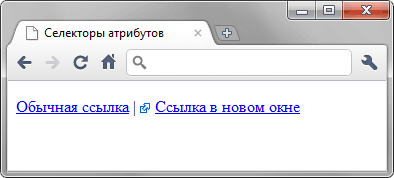

[атрибут="значение"]
Устанавливает стиль для элемента в том случае, если задано определённое значение специфичного атрибута.
Синтаксис
[атрибут="значение"] { Описание правил стиля }
E[атрибут="значение"] { Описание правил стиля }В первом случае стиль применяется ко всем тегам, которые содержат указанное значение атрибута. А во втором — только к определённым селекторам.
Пример
<!DOCTYPE html>
<html>
<head>
<meta charset="utf-8">
<title>Селекторы атрибутов</title>
<style>
a[target="_blank"] {
background: url(images/blank.png) 0 6px no-repeat; /* Фоновый рисунок */
padding-left: 15px; /* Смещаем текст вправо */
}
</style>
</head>
<body>
<p><a href="link1.html">Обычная ссылка</a> |
<a href="link2" target="_blank">Ссылка в новом окне</a></p>
</body>
</html>Результат примера показан ниже (рис. 1).

Рис. 1. Изменение стиля элемента в зависимости от значения атрибута target
В данном примере рисунок к ссылке добавляется с помощью свойства background. В его функции входит создание повторяющейся фоновой картинки, но повторение фона можно отменить через значение no-repeat, что в итоге даст единственное изображение.
Спецификация
| Спецификация | Статус |
|---|---|
| CSS Selectors Level 3 | Рекомендация |
| CSS 2.1 | Рекомендация |
| CSS 1 | Рекомендация |
Браузеры
| Internet Explorer | Chrome | Opera | Safari | Firefox |
| 7 | 1 | 9 | 3 | 1 |
| Android | Firefox Mobile | Opera Mobile | Safari Mobile |
| 1 | 1 | 9 | 3 |